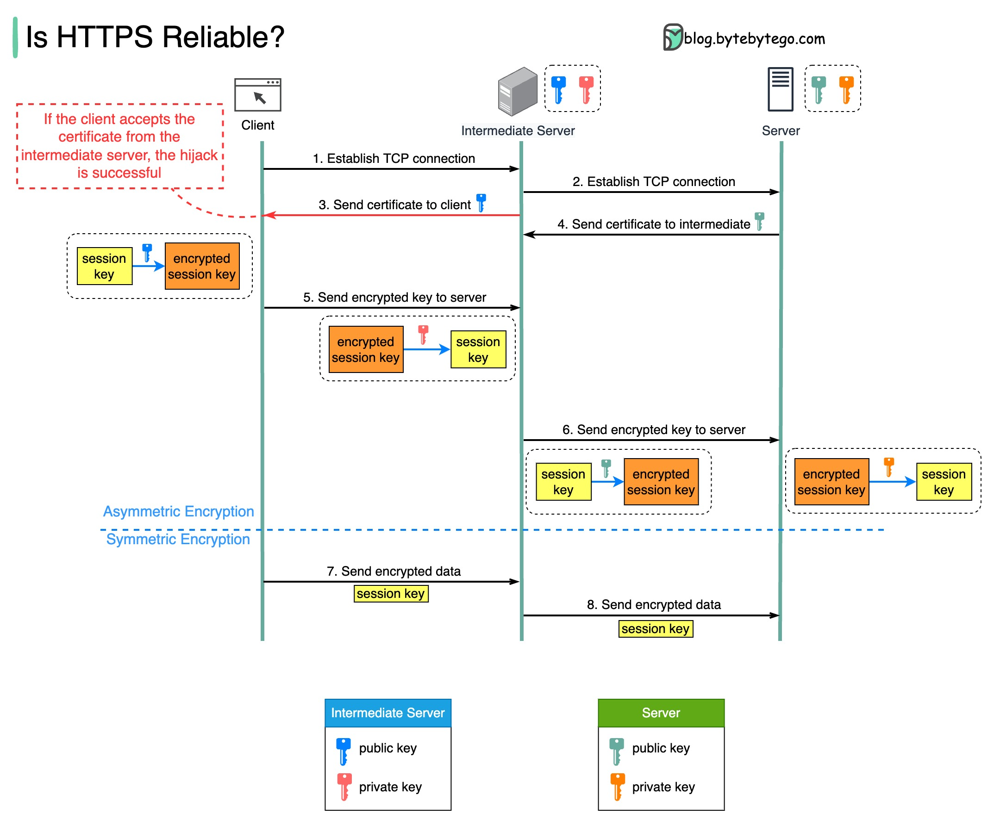

If HTTPS is safe, how can tools like Fiddler capture network packets sent via HTTPS?
The diagram below shows a scenario where a malicious intermediate hijacks the packets.
Prerequisite: root certificate of the intermediate server is present in the trust-store.
Step 1 - The client requests to establish a TCP connection with the server. The request is maliciously routed to an intermediate server, instead of the real backend server. Then, a TCP connection is established between the client and the intermediate server.
Step 2 - The intermediate server establishes a TCP connection with the actual server.
Step 3 - The intermediate server sends the SSL certificate to the client. The certificate contains the public key, hostname, expiry dates, etc. The client validates the certificate.
Step 4 - The legitimate server sends its certificate to the intermediate server. The intermediate server validates the certificate.
Step 5 - The client generates a session key and encrypts it using the public key from the intermediate server. The intermediate server receives the encrypted session key and decrypts it with the private key.
Step 6 - The intermediate server encrypts the session key using the public key from the actual server and then sends it there. The legitimate server decrypts the session key with the private key.
Steps 7 and 8 - Now, the client and the server can communicate using the session key (symmetric encryption.) The encrypted data is transmitted in a secure bi-directional channel. The intermediate server can always decrypt the data.